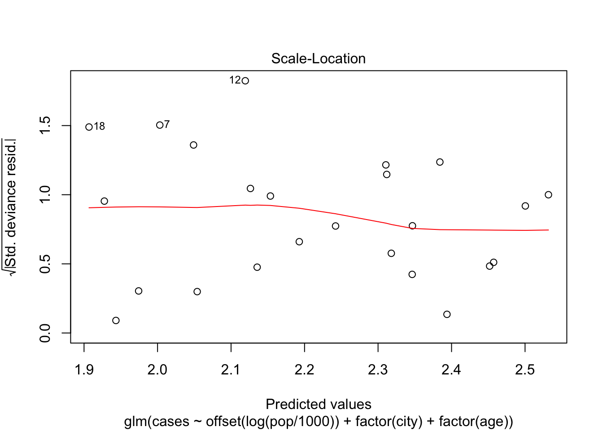

Assignments Modern Methods in Data Analysis, week 1
Wouter van Amsterdam
2018-01-08
Last updated: 2018-01-17
Code version: 4ae1ef0
Setup
Load some packages
library(epistats) # contains 'fromParentDir' and other handy functions
library(magrittr) # for 'piping' '%>%'
library(dplyr) # for data mangling, selecting columns and filtering rows
library(ggplot2) # awesome plotting library
library(stringr) # for working with strings
library(purrr) # for the 'map' function, which is an alternative for lapply, sapply, mapply, etc.For installing packages, type install.packages(<package_name>), for instance: install.packages(dplyr)
epistats is only available from GitHub, and can be installed as follows:
install.packages(devtools) # when not installed already
devtools::install_github("vanAmsterdam/epistats")Day 1 Linear models
First read in the data:
y <- c(87,86.5,89,88.5,87.5,88,86.5,87,85,86,85,83)
dose <- c(5,6,7,8,9,10,5,6,7,8,9,10)
group <- c(0,0,0,0,0,0,1,1,1,1,1,1)
model.an <- glm(y~factor(group), family = gaussian)
names(model.an) [1] "coefficients" "residuals" "fitted.values"
[4] "effects" "R" "rank"
[7] "qr" "family" "linear.predictors"
[10] "deviance" "aic" "null.deviance"
[13] "iter" "weights" "prior.weights"
[16] "df.residual" "df.null" "y"
[19] "converged" "boundary" "model"
[22] "call" "formula" "terms"
[25] "data" "offset" "control"
[28] "method" "contrasts" "xlevels" model.an$coefficients (Intercept) factor(group)1
87.750000 -2.333333 summary(model.an)
Call:
glm(formula = y ~ factor(group), family = gaussian)
Deviance Residuals:
Min 1Q Median 3Q Max
-2.4167 -0.5000 0.0000 0.8333 1.5833
Coefficients:
Estimate Std. Error t value Pr(>|t|)
(Intercept) 87.7500 0.4930 177.989 < 2e-16 ***
factor(group)1 -2.3333 0.6972 -3.347 0.00741 **
---
Signif. codes: 0 '***' 0.001 '**' 0.01 '*' 0.05 '.' 0.1 ' ' 1
(Dispersion parameter for gaussian family taken to be 1.458333)
Null deviance: 30.917 on 11 degrees of freedom
Residual deviance: 14.583 on 10 degrees of freedom
AIC: 42.394
Number of Fisher Scoring iterations: 2Fit without interaction
model.anc <- glm(y~factor(group)+dose, family = gaussian)
summary(model.anc)
Call:
glm(formula = y ~ factor(group) + dose, family = gaussian)
Deviance Residuals:
Min 1Q Median 3Q Max
-1.8809 -0.7143 0.3095 0.8036 1.2619
Coefficients:
Estimate Std. Error t value Pr(>|t|)
(Intercept) 89.3571 1.5992 55.876 9.48e-13 ***
factor(group)1 -2.3333 0.6933 -3.366 0.00831 **
dose -0.2143 0.2030 -1.056 0.31858
---
Signif. codes: 0 '***' 0.001 '**' 0.01 '*' 0.05 '.' 0.1 ' ' 1
(Dispersion parameter for gaussian family taken to be 1.441799)
Null deviance: 30.917 on 11 degrees of freedom
Residual deviance: 12.976 on 9 degrees of freedom
AIC: 42.993
Number of Fisher Scoring iterations: 2drop1(model.anc, test = "F")Single term deletions
Model:
y ~ factor(group) + dose
Df Deviance AIC F value Pr(>F)
<none> 12.976 42.993
factor(group) 1 29.309 50.771 11.3284 0.008313 **
dose 1 14.583 42.394 1.1147 0.318583
---
Signif. codes: 0 '***' 0.001 '**' 0.01 '*' 0.05 '.' 0.1 ' ' 1Get interaction plot
interaction.plot(dose, group, y, mean, ylab = "Blood pressure")
Excercise 1
load(fromParentDir("data/starfish.RData"))
str(starfish)'data.frame': 13 obs. of 3 variables:
$ starfish: num 1 2 3 4 5 6 7 8 9 10 ...
$ location: Factor w/ 2 levels "A","B": 1 1 1 1 1 1 1 2 2 2 ...
$ metabole: num 173 162 176 181 164 169 170 185 164 177 ...
- attr(*, "variable.labels")= Named chr "starfish number" "location" "metabole concentratio"
..- attr(*, "names")= chr "starfish" "location" "metabole"a. create boxplot
boxplot(metabole~location, data = starfish)
b. fit ANOVA
fit <- lm(metabole~location, data = starfish)
summary(fit)
Call:
lm(formula = metabole ~ location, data = starfish)
Residuals:
Min 1Q Median 3Q Max
-9.5000 -5.5000 -0.7143 3.5000 11.5000
Coefficients:
Estimate Std. Error t value Pr(>|t|)
(Intercept) 170.714 2.631 64.890 1.44e-15 ***
locationB 2.786 3.872 0.719 0.487
---
Signif. codes: 0 '***' 0.001 '**' 0.01 '*' 0.05 '.' 0.1 ' ' 1
Residual standard error: 6.96 on 11 degrees of freedom
Multiple R-squared: 0.04493, Adjusted R-squared: -0.04189
F-statistic: 0.5175 on 1 and 11 DF, p-value: 0.4869c. create ANOVA table
(requires some extra work, but this gets you in the direction)
aov(fit)Call:
aov(formula = fit)
Terms:
location Residuals
Sum of Squares 25.0714 532.9286
Deg. of Freedom 1 11
Residual standard error: 6.960463
Estimated effects may be unbalancedd. test group differences
From the summary it is clear that the mean metabole is not significantly different between the two locations.
We are testing:
\[H_0: mean(metabole_{LocA}) = mean(metabole_{LocB}) = mean(metabole)\]
Versus
\[H_1: mean(metabole_{LocA}) \neq mean(metabole_{LocB})\]
2. Hormone treatment and blood calcium
I could not find the data file, so here is it:
df <- data.frame(
sex = rep(rep(c("Female", "Male"), each = 5), 2),
hormone = rep(c(TRUE, FALSE), each = 10),
calcium = c(17, 18.9, 13.2, 14.6, 13.3,
16.5, 14.3, 10.9, 15.6, 8.9,
18.6, 16.2, 12.5, 15.1, 16.2,
17.1, 14.7, 15.3, 14.2, 12.8)
)
df sex hormone calcium
1 Female TRUE 17.0
2 Female TRUE 18.9
3 Female TRUE 13.2
4 Female TRUE 14.6
5 Female TRUE 13.3
6 Male TRUE 16.5
7 Male TRUE 14.3
8 Male TRUE 10.9
9 Male TRUE 15.6
10 Male TRUE 8.9
11 Female FALSE 18.6
12 Female FALSE 16.2
13 Female FALSE 12.5
14 Female FALSE 15.1
15 Female FALSE 16.2
16 Male FALSE 17.1
17 Male FALSE 14.7
18 Male FALSE 15.3
19 Male FALSE 14.2
20 Male FALSE 12.8a. create boxplot
boxplot(calcium ~ sex + hormone, data = df)
b. fit ANOVA
fit <- lm(calcium ~ factor(sex) + factor(hormone), data = df)c. test hypothosis
summary(fit)
Call:
lm(formula = calcium ~ factor(sex) + factor(hormone), data = df)
Residuals:
Min 1Q Median 3Q Max
-4.655 -1.725 0.165 1.948 3.815
Coefficients:
Estimate Std. Error t value Pr(>|t|)
(Intercept) 16.0350 0.9286 17.267 3.25e-12 ***
factor(sex)Male -1.5300 1.0723 -1.427 0.172
factor(hormone)TRUE -0.9500 1.0723 -0.886 0.388
---
Signif. codes: 0 '***' 0.001 '**' 0.01 '*' 0.05 '.' 0.1 ' ' 1
Residual standard error: 2.398 on 17 degrees of freedom
Multiple R-squared: 0.1423, Adjusted R-squared: 0.04141
F-statistic: 1.41 on 2 and 17 DF, p-value: 0.2712For both grouping variables, there is no significant difference between the means of the calcium levels.
e. estimate difference between hormone groups
df %>%
group_by(hormone) %>%
summarize(mean(calcium))# A tibble: 2 x 2
hormone `mean(calcium)`
<lgl> <dbl>
1 F 15.3
2 T 14.33. Alligators
Load data
load(fromParentDir("data/alligator.RData"))
str(alligator)'data.frame': 25 obs. of 2 variables:
$ WEIGHT: num 130 51 640 28 80 110 33 90 36 83 ...
$ LENGTH: num 94 74 147 58 86 94 63 86 69 86 ...a. scatterplot
plot(WEIGHT~LENGTH, data = alligator)
b. Scatterplot with log-transform
plot(log(WEIGHT)~log(LENGTH), data = alligator)
c. compare
The relationship between \(ln(weight)\) and \(ln(length)\) seems to fit a straight line better.
d. linear fit
fit <- lm(log(WEIGHT)~log(LENGTH), data = alligator)
fit$coefficients(Intercept) log(LENGTH)
-10.174601 3.285993 This gives rise to the following equation:
\[ln(Weight_i) = *ln(Length_i) + -10.2\]
e. ANOVA table and conclusion
aov(fit) %>% summary() Df Sum Sq Mean Sq F value Pr(>F)
log(LENGTH) 1 12.132 12.132 394.7 5.59e-16 ***
Residuals 23 0.707 0.031
---
Signif. codes: 0 '***' 0.001 '**' 0.01 '*' 0.05 '.' 0.1 ' ' 1There seems to be a significant relationship between length and weight.
Looking at the model fit
summary(fit)
Call:
lm(formula = log(WEIGHT) ~ log(LENGTH), data = alligator)
Residuals:
Min 1Q Median 3Q Max
-0.31849 -0.09846 0.00690 0.07618 0.45049
Coefficients:
Estimate Std. Error t value Pr(>|t|)
(Intercept) -10.1746 0.7316 -13.91 1.10e-12 ***
log(LENGTH) 3.2860 0.1654 19.87 5.59e-16 ***
---
Signif. codes: 0 '***' 0.001 '**' 0.01 '*' 0.05 '.' 0.1 ' ' 1
Residual standard error: 0.1753 on 23 degrees of freedom
Multiple R-squared: 0.9449, Adjusted R-squared: 0.9425
F-statistic: 394.7 on 1 and 23 DF, p-value: 5.588e-16The \(R^2\) is very high, so most of the variation in weight can be explained with length.
Excercise 4. Blood pressure and treatment
This excercise was skipped for now It is not completely clear which dataset is referred to.
bp <- data.frame(
treatment = rep(c("placebo", "treatment"), each = 6),
sbp = c(87,68.5,89,88.5,87.5,88,
86.5,87,85,86,85,83))5. Low birth weight
lowb <- read.table(file = fromParentDir("data/lowbirth.dat"),
header = T)
head(lowb) id low age lwt race smoke ptl ht ui ftv bwt
1 85 0 19 182 2 0 0 0 1 0 2523
2 86 0 33 155 3 0 0 0 0 3 2551
3 87 0 20 105 1 1 0 0 0 1 2557
4 88 0 21 108 1 1 0 0 1 2 2594
5 89 0 18 107 1 1 0 0 1 0 2600
6 91 0 21 124 3 0 0 0 0 0 2622a. fit model for bwt
fit <- glm(bwt~ht*(smoke+age), family = gaussian, data = lowb)
summary(fit)
Call:
glm(formula = bwt ~ ht * (smoke + age), family = gaussian, data = lowb)
Deviance Residuals:
Min 1Q Median 3Q Max
-2161.42 -444.67 60.76 471.38 1550.90
Coefficients:
Estimate Std. Error t value Pr(>|t|)
(Intercept) 2709.30 240.89 11.247 < 2e-16 ***
ht 2418.74 1151.59 2.100 0.03707 *
smoke -292.98 108.10 -2.710 0.00736 **
age 16.22 9.86 1.645 0.10174
ht:smoke 311.87 424.39 0.735 0.46337
ht:age -129.64 48.60 -2.667 0.00833 **
---
Signif. codes: 0 '***' 0.001 '**' 0.01 '*' 0.05 '.' 0.1 ' ' 1
(Dispersion parameter for gaussian family taken to be 490969.7)
Null deviance: 99917053 on 188 degrees of freedom
Residual deviance: 89847460 on 183 degrees of freedom
AIC: 3020.9
Number of Fisher Scoring iterations: 2b. interaction terms interpretation
There seems to be no interaction between hypertension and smoking. In other words, the effects of both smoking and hypertension on birthweight are independent of each other.
There is a significant interaction between hypertension and age.
The coefficient for hypertension decreases with increasing age (since the sign of the interaction is negative). At first it seems counter-intuitive that birthweight is higher when the mother has hypertension. However, upon inspection of the interaction, it is clear that the effect of hypertension decreases with 130 for each year in age. So the hypothetical mother of age 0 will have babies that are 2568 heavier than average when they have hypertension. From 20 years onward, the effect of hypertension on birtweight will be negative, as expected. Then, for increasing age, the effect of hypertension on birth weight will keep on getting more negative.
c. check dropping of interaction
drop1(fit, test = "F")Single term deletions
Model:
bwt ~ ht * (smoke + age)
Df Deviance AIC F value Pr(>F)
<none> 89847460 3020.9
ht:smoke 1 90112593 3019.5 0.5400 0.463366
ht:age 1 93340890 3026.2 7.1154 0.008328 **
---
Signif. codes: 0 '***' 0.001 '**' 0.01 '*' 0.05 '.' 0.1 ' ' 1The interaction between hypertension and smoking can be dropped.
fit2 <- glm(bwt ~ ht * age + smoke,
data = lowb, family = gaussian)
summary(fit2)
Call:
glm(formula = bwt ~ ht * age + smoke, family = gaussian, data = lowb)
Deviance Residuals:
Min 1Q Median 3Q Max
-2174.16 -438.51 48.85 478.79 1556.97
Coefficients:
Estimate Std. Error t value Pr(>|t|)
(Intercept) 2699.463 240.220 11.237 < 2e-16 ***
ht 2568.064 1132.100 2.268 0.02447 *
age 16.302 9.847 1.655 0.09955 .
smoke -272.746 104.403 -2.612 0.00973 **
ht:age -130.504 48.524 -2.689 0.00781 **
---
Signif. codes: 0 '***' 0.001 '**' 0.01 '*' 0.05 '.' 0.1 ' ' 1
(Dispersion parameter for gaussian family taken to be 489742.4)
Null deviance: 99917053 on 188 degrees of freedom
Residual deviance: 90112593 on 184 degrees of freedom
AIC: 3019.5
Number of Fisher Scoring iterations: 2drop1(fit2, test = "F")Single term deletions
Model:
bwt ~ ht * age + smoke
Df Deviance AIC F value Pr(>F)
<none> 90112593 3019.5
smoke 1 93454969 3024.4 6.8248 0.009733 **
ht:age 1 93655051 3024.8 7.2333 0.007814 **
---
Signif. codes: 0 '***' 0.001 '**' 0.01 '*' 0.05 '.' 0.1 ' ' 1fit3 <- glm(bwt ~ ht + ht:age + smoke,
data = lowb, family = gaussian)
summary(fit3)
Call:
glm(formula = bwt ~ ht + ht:age + smoke, family = gaussian, data = lowb)
Deviance Residuals:
Min 1Q Median 3Q Max
-2092.26 -448.26 22.41 518.41 1908.41
Coefficients:
Estimate Std. Error t value Pr(>|t|)
(Intercept) 3081.59 66.80 46.134 < 2e-16 ***
ht 2189.56 1113.97 1.966 0.05085 .
smoke -280.33 104.79 -2.675 0.00814 **
ht:age -114.22 47.74 -2.393 0.01773 *
---
Signif. codes: 0 '***' 0.001 '**' 0.01 '*' 0.05 '.' 0.1 ' ' 1
(Dispersion parameter for gaussian family taken to be 494349.5)
Null deviance: 99917053 on 188 degrees of freedom
Residual deviance: 91454663 on 185 degrees of freedom
AIC: 3020.3
Number of Fisher Scoring iterations: 2drop1(fit3, test = "F")Single term deletions
Model:
bwt ~ ht + ht:age + smoke
Df Deviance AIC F value Pr(>F)
<none> 91454663 3020.3
smoke 1 94992205 3025.5 7.1560 0.008141 **
ht:age 1 94284631 3024.1 5.7246 0.017730 *
---
Signif. codes: 0 '***' 0.001 '**' 0.01 '*' 0.05 '.' 0.1 ' ' 1fit4 <- glm(bwt ~ ht:age + smoke,
data = lowb, family = gaussian)
summary(fit4)
Call:
glm(formula = bwt ~ ht:age + smoke, family = gaussian, data = lowb)
Deviance Residuals:
Min 1Q Median 3Q Max
-2098.24 -454.24 18.15 513.76 1904.15
Coefficients:
Estimate Std. Error t value Pr(>|t|)
(Intercept) 3085.850 67.273 45.870 < 2e-16 ***
smoke -278.612 105.592 -2.639 0.00903 **
ht:age -22.067 9.058 -2.436 0.01579 *
---
Signif. codes: 0 '***' 0.001 '**' 0.01 '*' 0.05 '.' 0.1 ' ' 1
(Dispersion parameter for gaussian family taken to be 501959.7)
Null deviance: 99917053 on 188 degrees of freedom
Residual deviance: 93364512 on 186 degrees of freedom
AIC: 3022.2
Number of Fisher Scoring iterations: 2drop1(fit4, test = "F")Single term deletions
Model:
bwt ~ ht:age + smoke
Df Deviance AIC F value Pr(>F)
<none> 93364512 3022.2
smoke 1 96859167 3027.2 6.962 0.009031 **
ht:age 1 96343646 3026.1 5.935 0.015785 *
---
Signif. codes: 0 '***' 0.001 '**' 0.01 '*' 0.05 '.' 0.1 ' ' 1Now removing the group effect of smoke will significantly reduce the F value of the model, and also the interaction between hypertension and age cannot be reduced.
This is the most parsimonious model we can get without losing goodness of fit.
Birthweight decreases with smoking as expected, and decreases in the presence of hypertension. For older mothers, the effect of hypertension gets stronger.
Day 2. Logistic regression part 1
R commands
First the data file needs to be read in. The data is in episode.txt. It is a text file. The first lines are:
episode followup cd4 age
0 24 125 35
0 12 50 34
1 6 30 37
0 6 80 36
0 3 170 35
0 6 95 26
0 4 35 44
0 3 50 42
2 6 25 64The first line contains the column names. This can be read in with the command read.table(). This results in a data frame object. A data frame contains several columns of data. These columns can be of different type: they can be a grouping variable, a continuous variable or a variable containing characters. We will call the data frame epi.dat:epi.dat \(<-\) read.table(file=“episode.txt”, header=TRUE).The header=TRUE states that the first line contains the column names.
In this file the columns are separated by spaces. Often a different separator is used, for instance a comma, called a csv (comma separated value) file. Then one can use :
read.table(file=“episode.txt”, header=TRUE, sep=“,”). To see what the names of the columns are: names(epi.dat). To look at a specific column, e.g. cd4: epi.dat$cd4. So if you want to use a variable from a data frame, use the name of that data frame, then a dollar sign’ followed by the column name. In the cd4 column the cd4 values of the patients are stored. From this we need to make a new column which has a 1 if the cd4 value is smaller than 200 and a zero otherwise. To do this use cd4$<$200. If you do this you see that you get a column with TRUE and FALSE in it. To make this a column with 0 and 1, multiply the statement with 1 and put the result in a column called immune: immune \(<-\) 1*(cd4$<$200). This variable immune is in your workspace, not in the data frame. To get it in the data frame: epi.dat \(<-\)data.frame(epi.dat,immune). The get rid of immune in the workspace: rm(immune).
Now we are ready to fit the models. If you do not like to type the name of the data frame, a dollar sign and the column name all of the time you can make it clear that you want to use the epi.dat data frame by : attach(epi.dat). After this if you want to use a variable from this data frame just type the column name.
If there is an exposure in the data file that is a group variable, coded other than 0-1, then you should tell this to R by using the function factor(). So factor(group) tells R that group is not a numeric variable but that its values should be used as group labels. To fit the logistic regression model with immune as an exposure variable use
fit \(<-\) glm(episode\(\sim\)immune,family=binomial)
The command summary(fit) will give you the results.
For every patient also the follow-up time is recorded. It might sometimes be a good idea to model the odds per month follow-up, thus to use the model $ ( /followup )=+immune\(. Rewriting gives :\
\)()=+immune+(followup)\(, that is followup is in the model without a coefficient attached to it. To achieve this in R the term **offset** is used: **glm(episode\)$immune+offset(log(followup)), family=binomial).
To fit the logistic regression model 3 use: model3 \(<-\) glm(episode\(\sim\)immune+age,family=binomial).
model3 will contain the result. It will be an object of glm-type because you used glm to create it. To see what is in it use names(model3) and if you want to see something specific use e.g. model3$coefficients. To get the tables from the text : summary(model3). Profile confidence intervals can be obtained by: confint(fit3)** and the wald intervals by confint.default(fit3). The deviance residuals can be obtained by residuals(model3) and the fitted values by fitted.values(model3).
Now you can leave out 1 variable from the model and look at the differences in AIC’s. You can do this by fitting all the different models and then comparing them. You can also use the function drop1(fit). This function looks at the terms in fit, then leaves the terms out one by one and calculates for every term left out the AIC of the model. The command drop1(fit, test=“Chisq”) calculates the likelihood ratio test for every term left out. Then you can fit a model by leaving out the variable with the least influence and then start the procedure all over again using this last model as a starting point, etc. For the AIC this can also be done automatically: step(model3).
1. episode.txt
1. Reproduce the output for the 2 models for episode from the text.
(First read in the data from episode.txt)We will use dplyr to assign a new column in the dataframe called ‘immune’
require(dplyr) # this makes sure that dplyr is loaded
require(magrittr) # for handy piping
epi <- read.table(file = fromParentDir("data/episode.txt"), header = T)
epi %<>%
mutate(immune = cd4<200)
head(epi) episode followup cd4 age immune
1 0 24 125 35 TRUE
2 0 12 50 34 TRUE
3 1 6 30 37 TRUE
4 0 6 80 36 TRUE
5 0 3 170 35 TRUE
6 0 6 95 26 TRUEFit glm model
fit <- glm(episode~immune, family = binomial, data = epi)
summary(fit)
Call:
glm(formula = episode ~ immune, family = binomial, data = epi)
Deviance Residuals:
Min 1Q Median 3Q Max
-0.8410 -0.8410 -0.3482 -0.3482 2.3804
Coefficients:
Estimate Std. Error z value Pr(>|z|)
(Intercept) -2.7726 0.5951 -4.659 3.18e-06 ***
immuneTRUE 1.9151 0.6752 2.836 0.00456 **
---
Signif. codes: 0 '***' 0.001 '**' 0.01 '*' 0.05 '.' 0.1 ' ' 1
(Dispersion parameter for binomial family taken to be 1)
Null deviance: 90.424 on 97 degrees of freedom
Residual deviance: 80.070 on 96 degrees of freedom
AIC: 84.07
Number of Fisher Scoring iterations: 5Fit glm model with offset for follow-up time
fit2 <- glm(episode~immune+offset(followup), data = epi, family = binomial)
summary(fit2)
Call:
glm(formula = episode ~ immune + offset(followup), family = binomial,
data = epi)
Deviance Residuals:
Min 1Q Median 3Q Max
-4.6483 -0.1038 -0.0136 -0.0018 5.5305
Coefficients:
Estimate Std. Error z value Pr(>|z|)
(Intercept) -18.2932 0.9899 -18.479 < 2e-16 ***
immuneTRUE 5.0963 1.2132 4.201 2.66e-05 ***
---
Signif. codes: 0 '***' 0.001 '**' 0.01 '*' 0.05 '.' 0.1 ' ' 1
(Dispersion parameter for binomial family taken to be 1)
Null deviance: 307.80 on 97 degrees of freedom
Residual deviance: 292.04 on 96 degrees of freedom
AIC: 296.04
Number of Fisher Scoring iterations: 6This results in very different coefficients
Fit model with age
fit3 <- glm(episode~immune+age, family = binomial, data = epi)
drop1(fit3, test = "Chisq")Single term deletions
Model:
episode ~ immune + age
Df Deviance AIC LRT Pr(>Chi)
<none> 78.427 84.427
immune 1 87.063 91.063 8.6363 0.003295 **
age 1 80.070 84.070 1.6435 0.199852
---
Signif. codes: 0 '***' 0.001 '**' 0.01 '*' 0.05 '.' 0.1 ' ' 1Age does not seem to be important for modeling episode
2. This datafile also contains the variable followup. This is the
time a patient is in the study. Fit a logistic regression model
with the log of the follow up time as an exposure variable and
compare this model with the one that only contains an intercept
using the AIC.
fit0 <- glm(episode~1, data = epi, family = binomial)
fit1 <- glm(episode~log(followup), data = epi, family = binomial)
AIC(fit0, fit1) df AIC
fit0 1 92.42361
fit1 2 94.220603. It is possible to fit a model with an exposure with a fixed
coefficient of 1. The way to do it is to use the function
offset: **glm(episode $\sim$
offset(log(followup)),family=binomial)**. Fit this model and
compare the AIC with the former one.fit2 <- glm(episode~offset(log(followup)), family = binomial, data = epi)
AIC(fit1, fit2) df AIC
fit1 2 94.22060
fit2 1 95.159124. Write down the logistic regression model for the model with the
offset. Give an interpretation of this model.fit4 <- glm(episode~immune+offset(log(followup)), family = binomial, data = epi)
summary(fit4)
Call:
glm(formula = episode ~ immune + offset(log(followup)), family = binomial,
data = epi)
Deviance Residuals:
Min 1Q Median 3Q Max
-1.2103 -0.6371 -0.3763 -0.2684 2.7706
Coefficients:
Estimate Std. Error z value Pr(>|z|)
(Intercept) -4.9149 0.5999 -8.193 2.54e-16 ***
immuneTRUE 1.8140 0.6852 2.648 0.00811 **
---
Signif. codes: 0 '***' 0.001 '**' 0.01 '*' 0.05 '.' 0.1 ' ' 1
(Dispersion parameter for binomial family taken to be 1)
Null deviance: 93.159 on 97 degrees of freedom
Residual deviance: 84.341 on 96 degrees of freedom
AIC: 88.341
Number of Fisher Scoring iterations: 5Since we use the follow-up time as an offset, we are modeling the odds of experiencing an event per year (since followup is in years)
\[\ln{(\frac{\pi}{1-\pi}*\frac{1}{time}}) = \alpha + \beta*x\]
So that makes
\[\pi = \frac{1}{1+e^{-(\alpha + \beta*x + \ln(time))}}=\frac{1}{1+e^{-(\alpha + \beta*x)}/time}\]
When time goes to infinity, probability of an event goes to 1, which makes sense. Also, the probability (density?) is greater for patients with compromised immune status.
odds_0 <- exp(predict(fit4, newdata = data.frame(immune = F, followup=10)))
odds_1 <- exp(predict(fit4, newdata = data.frame(immune = T, followup=10)))
odds_10000 <- exp(predict(fit4, newdata = data.frame(immune = F, followup=10000)))
p0 = odds_0 / (1+odds_0)
p1 = odds_1 / (1+odds_1)
p10000 = odds_10000 / (1+odds_10000)Given 10 year of follow-up, a patient with an intact immune system has a probabilty of 6.8% for an event, while a patient with compromized immune system has a probability of 31.0
A patient with intact immune system and 10000 years of follow-up has a probability of 98.7%
Note that we could also use predict(fit4, newdata = ..., type = "response") to get the probabilities directly. However, this way we can show the relationship with the logistic model.
2. lowbirth.dat
1. Read in the dataset lowbirth.datlowb <- read.table(fromParentDir("data/lowbirth.dat"), header = T)2. Fit three models, one with exposure age, one with exposure smoke
and one with exposure ht.Probably they want us to model low as an outcome
fit1 <- glm(low ~ age, data = lowb, family = binomial)
fit2 <- glm(low ~ smoke, data = lowb, family = binomial)
fit3 <- glm(low ~ ht, data = lowb, family = binomial)3. For all 3 models give an interpretation of the estimate of
$\beta$ for the specific exposure at hand.
lapply(list(fit1, fit2, fit3), coefficients)[[1]]
(Intercept) age
0.38458192 -0.05115294
[[2]]
(Intercept) smoke
-1.0870515 0.7040592
[[3]]
(Intercept) ht
-0.877070 1.213542 Age has a negative \(\beta\), so according to this model, the probability of low birthweight will decrease with age (which probably is not true)
4. Compare all 3 models to the model with only an intercept in it
using AIC. Calculate for each the likelihood ratio and give this
an interpretation.We will use map from purrr, which applies a function to each element of its input.
fit0 <- glm(low ~ 1, data = lowb, family = binomial)
AIC(fit0, fit1, fit2, fit3) df AIC
fit0 1 236.6720
fit1 2 235.9120
fit2 2 233.8046
fit3 2 234.6499ls <- list(fit0, fit1, fit2, fit3) %>%
map(logLik) %>%
map_dbl(exp)
lrs <- ls / ls[1]
lrs[1] 1.000000 3.974977 11.400969 7.471283All AICs are close, but fit2 is the lowest and it is better than fit0.
The likelihood ratio for fit2 (vs fit0) is also highest (11.4)
5. Also compare the 3 models with each other by comparing AIC. Also
calculate likelihood ratios.ls[3] / ls[2][1] 2.868185ls[3] / ls[4][1] 1.525972ls[4] / ls[2][1] 1.879579fit2 > fit3 > fit1 according to both likelihood ratios and AIC.
Since all models have exactly 1 predictor, this was to be expected.
6. Which model fits the data best? Give your argumentation.fit2, it has the lowest AIC.
3. pdd.csv
1. Read in the data file pdd.csvpdd <- read.csv(fromParentDir("data/pdd.csv"))
head(pdd) nop gender arterio pdd n
1 0 0 0 4 46
2 0 0 1 4 30
3 0 1 0 9 66
4 0 1 1 3 16
5 1 0 0 5 16
6 1 0 1 13 45 Note that this file is different from the other files. It
doesn’t have a 0-1 variable in it. Instead the data is grouped.
The column pdd contains the number of parrots with PDD and the
column $n$ contains the total number of parrots. So $n-pdd$ is
the number of parrots without PDD. As an example, line number 6
states: there were 16 male parrots, from the NOP, having no
arteriosclerosis, and 5 of these had PDD. To fit a logistic
regression model the dependent variable is not just one column.
It is a matrix containing the number of PDD-cases and the number
without PDD. So the dependent variable is :
**cbind(pdd,n-pdd)**. cbind stands for column bind: it binds
together two columns into a matrix. The model can now be fitted
with: **glm(cbind(pdd,n-pdd)$\sim$ exposure, family=binomial)**
2. How many PDD cases are there from the NOP center (type:
**pdd\[nop==1\]**) and how many parrots in total? Answer the
same question for parrots not from the nop center. (type:
**pdd\[nop!=1\]**).For these situations, dplyr comes in handy
pdd %>%
group_by(nop) %>%
summarize(n_pdd = sum(pdd))# A tibble: 2 x 2
nop n_pdd
<int> <int>
1 0 20
2 1 45 If you want to know what the square brackets stand for, type:
**RSiteSearch(“indexing”,restrict=“docs”)** then go to “an
introduction to R” and then to chapter 2.7 and read it.
3. Use the previous exercise to make a table of pdd by nop.pdd %>%
group_by(nop) %>%
summarize(n_pdd = sum(pdd), n_no_pdd = sum(n-pdd))# A tibble: 2 x 3
nop n_pdd n_no_pdd
<int> <int> <int>
1 0 20 138
2 1 45 1054. Calculate the odds ratio and give it an interpretation. Why does
the outcome seem logical?or <- (45*138)/(20*105)
or[1] 2.957143There are more parrots with pdd for NOP, therefore the odds ratio is greater then 1.
5. Fit the logistic regression model with nop as exposure and
compare the results with those from the previous question.fit <- glm(cbind(pdd, n-pdd) ~ nop, data = pdd, family = binomial)
summary(fit)
Call:
glm(formula = cbind(pdd, n - pdd) ~ nop, family = binomial, data = pdd)
Deviance Residuals:
Min 1Q Median 3Q Max
-0.8504 -0.1688 0.1095 0.2364 0.6911
Coefficients:
Estimate Std. Error z value Pr(>|z|)
(Intercept) -1.9315 0.2393 -8.073 6.87e-16 ***
nop 1.0842 0.2983 3.634 0.000279 ***
---
Signif. codes: 0 '***' 0.001 '**' 0.01 '*' 0.05 '.' 0.1 ' ' 1
(Dispersion parameter for binomial family taken to be 1)
Null deviance: 15.5528 on 7 degrees of freedom
Residual deviance: 1.3975 on 6 degrees of freedom
AIC: 33.704
Number of Fisher Scoring iterations: 4exp(fit$coefficients[2]) nop
2.957143 The odds ratio coincides with the odds ratio from the logistic regression model
4. Dalmatian.cvs
1. Read in the data file dalmatian.csv.dalmatian <- read.csv(fromParentDir("data/dalmatian.csv"))
str(dalmatian)'data.frame': 1243 obs. of 6 variables:
$ deaf : int 0 0 0 0 0 0 0 0 0 0 ...
$ spot : int 2 2 2 2 2 2 2 2 2 2 ...
$ blueeye : int 0 0 0 0 0 0 0 0 0 0 ...
$ headspot: int 0 0 1 0 0 1 1 1 0 0 ...
$ gender : int 0 1 1 1 0 0 0 1 1 1 ...
$ fhs : num -0.173 -1.038 -1.038 -1.038 -1.038 ...2. Explain how the variable fhs deals with the heritability.This description is copied from Classical Methods in Data Analysis, day 11 logistic regression:
In the years 1995 through 1998 a research was done among 1243 Dalmatian puppies. It was determined whether or not they were deaf in at least one ear. The research question was if deafness was related to pigmentation. In order to answer this it was measured whether or not there were many spots on the skin, whether or not they had a spot on the head and whether or not the dog had blue eyes. In addition one wants to determine if there was heredity involved. In order to look at this the family history score was determined. This is a method to cope with litter effects (heredity): for every puppy it was determined how many brothers or sisters were deaf. Call this number m. Then from the whole dataset the fraction of dogs that are deaf can be determined. This fraction is multiplied by litter size - 1. This is then the expected number of deaf brothers or sisters when there are no differences between litters. The family history score is now defined as fhs = m - fraction * (litter size - 1) Whether or not the puppy is deaf (0=no, 1=yes) deaf The number of spots on the skin (1=light, 2=moderate, 3=heavy) spot Whether or not the dog had blue eyes (0=no, 1=yes) blueeye Whether or not the dog had an spot on the head (0=no, 1=yes) headspot Gender (0=male, 1=female) gender Family history score fhs
Basically it is the difference between the proportion of deaf dogs in a litter minus the expected proportion of deaf dogs in that litter if all litters were equal (‘the marginal probability’).
3. Fit the logistic regression model for deaf, with fhs as an
exposure variable.
fit1 <- glm(deaf ~ fhs, data = dalmatian, family = binomial)
summary(fit1)
Call:
glm(formula = deaf ~ fhs, family = binomial, data = dalmatian)
Deviance Residuals:
Min 1Q Median 3Q Max
-1.4296 -0.6062 -0.5012 -0.4382 2.2741
Coefficients:
Estimate Std. Error z value Pr(>|z|)
(Intercept) -1.58544 0.07853 -20.190 < 2e-16 ***
fhs 0.41004 0.05144 7.971 1.57e-15 ***
---
Signif. codes: 0 '***' 0.001 '**' 0.01 '*' 0.05 '.' 0.1 ' ' 1
(Dispersion parameter for binomial family taken to be 1)
Null deviance: 1145.0 on 1242 degrees of freedom
Residual deviance: 1081.2 on 1241 degrees of freedom
AIC: 1085.2
Number of Fisher Scoring iterations: 44. Compare the AIC of the previous model with the model that only
contains a constant. Also calculate the likelihood ratio and
interpret the results.fit0 <- glm(deaf ~ 1, data = dalmatian, family = binomial)
AIC(fit0, fit1) df AIC
fit0 1 1146.958
fit1 2 1085.183exp(as.numeric(logLik(fit1) - logLik(fit0)))[1] 7.056742e+13The AIC for the model with the hereditability variable is much lower, and the likelihood ratio is over \(10^13\), so it seems that hereditability is important to explain the number of deaf dogs in a litter.
Lets plot the distribution of fhs for deaf and non-deaf dogs:
require(ggplot2)
dalmatian %>%
mutate(deaf = factor(deaf)) %>% # treat deaf as factor variable
ggplot(aes(x = fhs, fill = deaf, col = deaf)) +
geom_density(alpha = 0.5)Exercises 2
1. osteochon.csv
1. Read in the data file osteochon.csvost <- read.csv(fromParentDir("data/osteochon.csv"))
str(ost)'data.frame': 440 obs. of 5 variables:
$ father: int 1 1 1 1 1 1 1 1 1 1 ...
$ food : int 3 2 1 2 2 1 1 2 2 2 ...
$ ground: int 2 1 2 1 1 2 2 1 1 2 ...
$ height: int 166 165 160 163 161 155 162 166 162 164 ...
$ oc : int 0 0 1 0 0 0 0 0 0 0 ...2. Fit a logistic regression model with the exposure variables
food, ground and height.fit <- glm(oc ~ food + ground + height, data = ost, family = binomial)
summary(fit)
Call:
glm(formula = oc ~ food + ground + height, family = binomial,
data = ost)
Deviance Residuals:
Min 1Q Median 3Q Max
-0.9326 -0.5907 -0.5059 -0.4202 2.5172
Coefficients:
Estimate Std. Error z value Pr(>|z|)
(Intercept) -18.42595 5.53937 -3.326 0.00088 ***
food -0.05759 0.23212 -0.248 0.80404
ground 0.40544 0.29397 1.379 0.16784
height 0.09785 0.03352 2.919 0.00351 **
---
Signif. codes: 0 '***' 0.001 '**' 0.01 '*' 0.05 '.' 0.1 ' ' 1
(Dispersion parameter for binomial family taken to be 1)
Null deviance: 361.41 on 439 degrees of freedom
Residual deviance: 351.00 on 436 degrees of freedom
AIC: 359
Number of Fisher Scoring iterations: 43. Give for each exposure variable the likelihood ratio test, when
it is left out of the model. Decide which exposure should be
left out.drop1(fit, test = "Chisq")Single term deletions
Model:
oc ~ food + ground + height
Df Deviance AIC LRT Pr(>Chi)
<none> 351.00 359.00
food 1 351.06 357.06 0.0615 0.804078
ground 1 352.96 358.96 1.9644 0.161049
height 1 359.89 365.89 8.8931 0.002862 **
---
Signif. codes: 0 '***' 0.001 '**' 0.01 '*' 0.05 '.' 0.1 ' ' 1Both food and ground can be removed from the model without significantly reducing the likelihood of the model. When we are doing stepwise elimination, we should first remove food from the model.
4. Fit the model without that exposure and do the same with this
model as above. Continue until you decide nothing can be left
out anymore.fit2 <- glm(oc ~ ground + height, data = ost, family = binomial)
drop1(fit2, test = "Chisq")Single term deletions
Model:
oc ~ ground + height
Df Deviance AIC LRT Pr(>Chi)
<none> 351.06 357.06
ground 1 352.99 356.99 1.9343 0.164291
height 1 359.91 363.91 8.8519 0.002928 **
---
Signif. codes: 0 '***' 0.001 '**' 0.01 '*' 0.05 '.' 0.1 ' ' 1We can remove ground here as expected. Notice that the p-value for removing ground from the model is exacty the same as in the previous step
fit3 <- glm(oc ~ height, data = ost, family = binomial)
drop1(fit3, test = "Chisq")Single term deletions
Model:
oc ~ height
Df Deviance AIC LRT Pr(>Chi)
<none> 352.99 356.99
height 1 361.41 363.41 8.4226 0.003706 **
---
Signif. codes: 0 '***' 0.001 '**' 0.01 '*' 0.05 '.' 0.1 ' ' 1Only height remains, we can not remove that one.
5. Describe the final model you are left with and interpret the
result.summary(fit3)
Call:
glm(formula = oc ~ height, family = binomial, data = ost)
Deviance Residuals:
Min 1Q Median 3Q Max
-0.9325 -0.5938 -0.5208 -0.4357 2.3829
Coefficients:
Estimate Std. Error z value Pr(>|z|)
(Intercept) -17.31649 5.47881 -3.161 0.00157 **
height 0.09440 0.03318 2.845 0.00444 **
---
Signif. codes: 0 '***' 0.001 '**' 0.01 '*' 0.05 '.' 0.1 ' ' 1
(Dispersion parameter for binomial family taken to be 1)
Null deviance: 361.41 on 439 degrees of freedom
Residual deviance: 352.99 on 438 degrees of freedom
AIC: 356.99
Number of Fisher Scoring iterations: 4In our final model, we see that only height is included. When height increases, the odds of getting osteochondrosis increases.
6. Give profile confidence intervals for the estimates in the final
model andconfint(fit3) 2.5 % 97.5 %
(Intercept) -28.2865831 -6.7577637
height 0.0303029 0.1606951From the help page help(confint) we can read that this function calls method confint.glm from package MASS, which uses the profile method (and not the Wald method), which we want.
7. Write a short account of the analysis you just did. It should
contain what the analysis was and its results.Left to reader.
2. episode.txt
1. Read in the file episode.txtepisode <- read.table(fromParentDir("data/episode.txt"), header = T)
str(episode)'data.frame': 98 obs. of 4 variables:
$ episode : int 0 0 1 0 0 0 0 0 1 1 ...
$ followup: int 24 12 6 6 3 6 4 3 6 13 ...
$ cd4 : int 125 50 30 80 170 95 35 50 25 15 ...
$ age : int 35 34 37 36 35 26 44 42 64 38 ...2. Fit the logistic regression model with exposures immune and age
and with log(followup) as an offset.fit <- glm(episode ~ cd4 + age + offset(log(followup)), data = episode,
family = binomial)
summary(fit)
Call:
glm(formula = episode ~ cd4 + age + offset(log(followup)), family = binomial,
data = episode)
Deviance Residuals:
Min 1Q Median 3Q Max
-1.41569 -0.64337 -0.31148 -0.09379 2.46146
Coefficients:
Estimate Std. Error z value Pr(>|z|)
(Intercept) -3.773165 1.272292 -2.966 0.00302 **
cd4 -0.005509 0.002254 -2.444 0.01452 *
age 0.024287 0.028195 0.861 0.38902
---
Signif. codes: 0 '***' 0.001 '**' 0.01 '*' 0.05 '.' 0.1 ' ' 1
(Dispersion parameter for binomial family taken to be 1)
Null deviance: 93.159 on 97 degrees of freedom
Residual deviance: 78.968 on 95 degrees of freedom
AIC: 84.968
Number of Fisher Scoring iterations: 63. Interpret the parameters and discuss the difference with the
model without the offset.fit2 <- glm(episode ~ cd4 + age, data = episode,
family = binomial)
summary(fit2)
Call:
glm(formula = episode ~ cd4 + age, family = binomial, data = episode)
Deviance Residuals:
Min 1Q Median 3Q Max
-1.17309 -0.73441 -0.34569 -0.08989 2.58264
Coefficients:
Estimate Std. Error z value Pr(>|z|)
(Intercept) -2.010532 1.282568 -1.568 0.11698
cd4 -0.005870 0.002253 -2.605 0.00918 **
age 0.036245 0.028522 1.271 0.20382
---
Signif. codes: 0 '***' 0.001 '**' 0.01 '*' 0.05 '.' 0.1 ' ' 1
(Dispersion parameter for binomial family taken to be 1)
Null deviance: 90.424 on 97 degrees of freedom
Residual deviance: 73.395 on 95 degrees of freedom
AIC: 79.395
Number of Fisher Scoring iterations: 6In the model without the offset, only the intercept changes. This indicates that the baseline risk is dependent on follow-up (which makes sense), but there seems to be no confounding effect of follow-up on CD4 or age.
4. Can immune or age or both be left out? Use AIC to check this.drop1(fit2)Single term deletions
Model:
episode ~ cd4 + age
Df Deviance AIC
<none> 73.395 79.395
cd4 1 87.063 91.063
age 1 75.043 79.043Age can be left out, it will make the AIC decrease
3. osteochon.csv
1. Read in the data file osteochon.csvost <- read.csv(fromParentDir("data/osteochon.csv"), header = T)
str(ost)'data.frame': 440 obs. of 5 variables:
$ father: int 1 1 1 1 1 1 1 1 1 1 ...
$ food : int 3 2 1 2 2 1 1 2 2 2 ...
$ ground: int 2 1 2 1 1 2 2 1 1 2 ...
$ height: int 166 165 160 163 161 155 162 166 162 164 ...
$ oc : int 0 0 1 0 0 0 0 0 0 0 ...2. Fit the logistic regression model with exposures father, food,
ground and heigt. (Remember to use factor() for food, ground and
father)
fit <- glm(oc ~ factor(father)+factor(food)+factor(ground)+height,
data = ost, family = binomial)
summary(fit)
Call:
glm(formula = oc ~ factor(father) + factor(food) + factor(ground) +
height, family = binomial, data = ost)
Deviance Residuals:
Min 1Q Median 3Q Max
-1.31760 -0.60006 -0.42885 -0.00014 2.66411
Coefficients:
Estimate Std. Error z value Pr(>|z|)
(Intercept) -21.22072 6.49750 -3.266 0.00109 **
factor(father)2 -0.36855 1.08219 -0.341 0.73343
factor(father)3 0.29233 1.09129 0.268 0.78880
factor(father)4 1.28479 0.99157 1.296 0.19507
factor(father)5 -16.28480 1931.91844 -0.008 0.99327
factor(father)6 -0.43177 1.08223 -0.399 0.68992
factor(father)7 0.92181 0.94354 0.977 0.32858
factor(father)8 0.10411 1.09103 0.095 0.92398
factor(father)9 -0.32744 1.07269 -0.305 0.76018
factor(father)10 0.32104 1.01286 0.317 0.75127
factor(father)11 0.05689 1.09009 0.052 0.95838
factor(father)12 -17.00697 1640.47966 -0.010 0.99173
factor(father)13 0.94060 1.03143 0.912 0.36180
factor(father)14 -17.06297 1864.54502 -0.009 0.99270
factor(father)15 -16.73689 1601.33090 -0.010 0.99166
factor(father)16 -0.88182 1.29308 -0.682 0.49527
factor(father)17 -16.54058 1763.47840 -0.009 0.99252
factor(father)18 0.32694 1.02005 0.321 0.74858
factor(father)19 0.49285 1.02140 0.483 0.62943
factor(father)20 0.88794 1.02911 0.863 0.38823
factor(father)21 -0.99384 1.29472 -0.768 0.44272
factor(father)22 -0.30801 1.08686 -0.283 0.77688
factor(father)23 -1.45067 1.31421 -1.104 0.26967
factor(father)24 0.19011 0.99870 0.190 0.84903
factor(father)25 0.76143 0.95690 0.796 0.42619
factor(father)26 0.12745 1.07746 0.118 0.90584
factor(father)27 1.03615 1.00323 1.033 0.30169
factor(father)28 -0.21298 1.08985 -0.195 0.84506
factor(father)29 0.86990 0.99215 0.877 0.38060
factor(father)30 -16.68318 1949.51777 -0.009 0.99317
factor(food)2 -0.30636 0.46885 -0.653 0.51347
factor(food)3 -0.34040 0.53165 -0.640 0.52199
factor(ground)2 0.35120 0.32363 1.085 0.27784
height 0.11854 0.03955 2.997 0.00272 **
---
Signif. codes: 0 '***' 0.001 '**' 0.01 '*' 0.05 '.' 0.1 ' ' 1
(Dispersion parameter for binomial family taken to be 1)
Null deviance: 361.41 on 439 degrees of freedom
Residual deviance: 304.90 on 406 degrees of freedom
AIC: 372.9
Number of Fisher Scoring iterations: 173. Use likelihood ratio tests to see which exposure can be left
out, then fit that model and again see which exposure can be
left out. Continue until no more exposures can be left out.drop1(fit, test = "Chisq")Single term deletions
Model:
oc ~ factor(father) + factor(food) + factor(ground) + height
Df Deviance AIC LRT Pr(>Chi)
<none> 304.90 372.90
factor(father) 29 350.89 360.89 45.994 0.023496 *
factor(food) 2 305.36 369.36 0.462 0.793692
factor(ground) 1 306.10 372.10 1.200 0.273289
height 1 314.50 380.50 9.600 0.001945 **
---
Signif. codes: 0 '***' 0.001 '**' 0.01 '*' 0.05 '.' 0.1 ' ' 1Let’s drop food as it has a LRT < 1
fit2 <- glm(oc ~ factor(father)+factor(ground)+height,
data = ost, family = binomial)
drop1(fit2, test = "Chisq")Single term deletions
Model:
oc ~ factor(father) + factor(ground) + height
Df Deviance AIC LRT Pr(>Chi)
<none> 305.36 369.36
factor(father) 29 351.06 357.06 45.696 0.025150 *
factor(ground) 1 306.67 368.67 1.310 0.252376
height 1 314.72 376.72 9.354 0.002224 **
---
Signif. codes: 0 '***' 0.001 '**' 0.01 '*' 0.05 '.' 0.1 ' ' 1Let’s drop ground since the \(\chi^2\) test is not significant (it does not significantly reduce the likelihood of our model)
fit3 <- glm(oc ~ factor(father)+height,
data = ost, family = binomial)
drop1(fit3, test = "Chisq")Single term deletions
Model:
oc ~ factor(father) + height
Df Deviance AIC LRT Pr(>Chi)
<none> 306.67 368.67
factor(father) 29 352.99 356.99 46.320 0.021801 *
height 1 315.80 375.80 9.128 0.002517 **
---
Signif. codes: 0 '***' 0.001 '**' 0.01 '*' 0.05 '.' 0.1 ' ' 1We cannot reduce the model any further.
4. Discuss the final model. Give a possible interpretation of the
terms in the model and why they are likely to be related to
osteochondrosis.
Left for your own interpretation.
5. Start off with the full model again and try to reduce it by
using AIC.drop1(fit)Single term deletions
Model:
oc ~ factor(father) + factor(food) + factor(ground) + height
Df Deviance AIC
<none> 304.90 372.90
factor(father) 29 350.89 360.89
factor(food) 2 305.36 369.36
factor(ground) 1 306.10 372.10
height 1 314.50 380.50Let’s drop father as it decreases the AIC the most
fit2 <- glm(oc ~ factor(food)+factor(ground)+height,
data = ost, family = binomial)
drop1(fit2)Single term deletions
Model:
oc ~ factor(food) + factor(ground) + height
Df Deviance AIC
<none> 350.89 360.89
factor(food) 2 351.06 357.06
factor(ground) 1 352.76 360.76
height 1 359.84 367.84Let’s drop food
fit3 <- glm(oc ~ factor(ground)+height,
data = ost, family = binomial)
drop1(fit3)Single term deletions
Model:
oc ~ factor(ground) + height
Df Deviance AIC
<none> 351.06 357.06
factor(ground) 1 352.99 356.99
height 1 359.91 363.91Let’s drop ground. Losing this variable does not change the AIC more than 2, but is is a simpler model so it is preferrable by ‘Ockham’s razor’
fit3 <- glm(oc ~ height,
data = ost, family = binomial)
drop1(fit3)Single term deletions
Model:
oc ~ height
Df Deviance AIC
<none> 352.99 356.99
height 1 361.41 363.41We cannot reduce the model any further without decreasing the likelihood.
6. Is the final model the same as the one you got with the
likelihood ratio tests? Can you explain this?The father model takes up 29 degrees of freedom, because it has 30 uniqe values. This makes the model estimate 29 parameters (means for each group). The AIC ‘punishes’ more complex models by adding 2 for each included predictor.
7. Give the 95% profile confidence interval for height and give the
interpretation of this.confint(fit3) 2.5 % 97.5 %
(Intercept) -28.2865831 -6.7577637
height 0.0303029 0.1606951This confidence interval does not include 0. This means that for any null hypothesis of \(\beta_{height}\) within this confidence interval, we would not reject the null-hypothesis, given these data.
4. lowbirth .dat
This was skipped for now, see the previous excercise
1. Fit the logistic regression model with exposures age, lwt, race,
smoke, ptl, ht, ui and ftv.
2. Find out which exposures can be left out using AIC.
3. Discuss the final model.
4. Write a short report about your findings. Include the
statistical model you used, the method you used to reduce this
model and the final results (estimates and standard errors).Day 5. Poisson and GLM
1. Lung cancer
To the lung cancer count data from the text, fit the model $()=_0+(population;size/1000)+CITY+AGE $. The offset is population size in thousands.
lung <- read.table(fromParentDir("data/cancer"), header = T)
str(lung)'data.frame': 24 obs. of 4 variables:
$ age : int 1 2 3 4 5 6 1 2 3 4 ...
$ city : int 1 1 1 1 1 1 2 2 2 2 ...
$ cases: int 11 11 11 10 11 10 13 6 15 10 ...
$ pop : int 3059 800 710 581 509 605 2879 1083 923 834 ...fit <- glm(cases ~ offset(log(pop/1000)) + factor(city) + factor(age),
data = lung, family = poisson)
summary(fit)
Call:
glm(formula = cases ~ offset(log(pop/1000)) + factor(city) +
factor(age), family = poisson, data = lung)
Deviance Residuals:
Min 1Q Median 3Q Max
-2.63573 -0.67296 -0.03436 0.37258 1.85267
Coefficients:
Estimate Std. Error z value Pr(>|z|)
(Intercept) 1.2757 0.2003 6.370 1.89e-10 ***
factor(city)2 -0.3301 0.1815 -1.818 0.0690 .
factor(city)3 -0.3715 0.1878 -1.978 0.0479 *
factor(city)4 -0.2723 0.1879 -1.450 0.1472
factor(age)2 1.1010 0.2483 4.434 9.23e-06 ***
factor(age)3 1.5186 0.2316 6.556 5.53e-11 ***
factor(age)4 1.7677 0.2294 7.704 1.31e-14 ***
factor(age)5 1.8569 0.2353 7.891 3.00e-15 ***
factor(age)6 1.4197 0.2503 5.672 1.41e-08 ***
---
Signif. codes: 0 '***' 0.001 '**' 0.01 '*' 0.05 '.' 0.1 ' ' 1
(Dispersion parameter for poisson family taken to be 1)
Null deviance: 129.908 on 23 degrees of freedom
Residual deviance: 23.447 on 15 degrees of freedom
AIC: 137.84
Number of Fisher Scoring iterations: 5Make a plot of the deviance residuals against the fitted values and discuss this plot.
plot(fit, which = 3)
For the lower predicted values, there are some observations with high deviance, namely 12, 7 and 18. There does not seem to be a lot of structure in the residuals, which indicates that the model fit’s the data pretty well.
See which terms are needed in the model.
drop1(fit)Single term deletions
Model:
cases ~ offset(log(pop/1000)) + factor(city) + factor(age)
Df Deviance AIC
<none> 23.447 137.84
factor(city) 3 28.307 136.69
factor(age) 5 126.515 230.90Dropping city would decrease the AIC, so we can do that. Dropping age increases the model by a great amount.
fit2 <- glm(cases ~ offset(log(pop/1000)) + factor(age),
data = lung, family = poisson)
summary(fit2)
Call:
glm(formula = cases ~ offset(log(pop/1000)) + factor(age), family = poisson,
data = lung)
Deviance Residuals:
Min 1Q Median 3Q Max
-2.8520 -0.6424 -0.1067 0.7853 1.5468
Coefficients:
Estimate Std. Error z value Pr(>|z|)
(Intercept) 1.0455 0.1741 6.006 1.90e-09 ***
factor(age)2 1.0823 0.2481 4.363 1.29e-05 ***
factor(age)3 1.5017 0.2314 6.489 8.66e-11 ***
factor(age)4 1.7503 0.2292 7.637 2.22e-14 ***
factor(age)5 1.8472 0.2352 7.855 4.00e-15 ***
factor(age)6 1.4083 0.2501 5.630 1.80e-08 ***
---
Signif. codes: 0 '***' 0.001 '**' 0.01 '*' 0.05 '.' 0.1 ' ' 1
(Dispersion parameter for poisson family taken to be 1)
Null deviance: 129.908 on 23 degrees of freedom
Residual deviance: 28.307 on 18 degrees of freedom
AIC: 136.69
Number of Fisher Scoring iterations: 5Give the estimates of the best fitted model and give their profile likelihood intervals and discuss these.
confint(fit2) 2.5 % 97.5 %
(Intercept) 0.6837463 1.368330
factor(age)2 0.5930558 1.570406
factor(age)3 1.0506603 1.961774
factor(age)4 1.3043879 2.206600
factor(age)5 1.3876652 2.313616
factor(age)6 0.9143186 1.899720For each age group, the confidence interval does not include 0, which implies a significant difference between the groups.
The risk seems to increase monotonically up untill age catergory 5, after which it decreases a little. Let’s see if there are enough observations in that category
lung %>%
group_by(age) %>%
summarize(sum(pop))# A tibble: 6 x 2
age `sum(pop)`
<int> <int>
1 1 11600
2 2 3811
3 3 3367
4 4 2748
5 5 2217
6 6 2665The populution is not too small for this upper age category, which gives us no reason to discard the possibility that risk goes down a little for the upper age category.
2. Coronary
The table above gives the number of coronary deaths for smokers and nonsmokers per age group. Read in the data.
coronary <- read.table(fromParentDir("data/coronary"), header = T)
str(coronary)'data.frame': 10 obs. of 4 variables:
$ Age : int 1 1 2 2 3 3 4 4 5 5
$ Smoke : int 1 0 1 0 1 0 1 0 1 0
$ deaths: int 32 2 104 12 206 28 186 28 102 31
$ Pyears: int 52407 18790 43248 10673 28612 5710 12663 2585 5317 1462Use a poisson model to analyze the data. Use the likelihood ratio tests to see which terms are needed in the model.
fit <- glm(deaths ~ Age + Smoke + offset(log(Pyears/1000)), data = coronary,
family = poisson)
summary(fit)
Call:
glm(formula = deaths ~ Age + Smoke + offset(log(Pyears/1000)),
family = poisson, data = coronary)
Deviance Residuals:
Min 1Q Median 3Q Max
-4.5712 -2.7562 0.2857 1.4261 3.7183
Coefficients:
Estimate Std. Error z value Pr(>|z|)
(Intercept) -1.21057 0.13929 -8.691 < 2e-16 ***
Age 0.83583 0.02904 28.777 < 2e-16 ***
Smoke 0.40637 0.10720 3.791 0.00015 ***
---
Signif. codes: 0 '***' 0.001 '**' 0.01 '*' 0.05 '.' 0.1 ' ' 1
(Dispersion parameter for poisson family taken to be 1)
Null deviance: 935.067 on 9 degrees of freedom
Residual deviance: 69.182 on 7 degrees of freedom
AIC: 130.25
Number of Fisher Scoring iterations: 4drop1(fit, test = "Chisq")Single term deletions
Model:
deaths ~ Age + Smoke + offset(log(Pyears/1000))
Df Deviance AIC LRT Pr(>Chi)
<none> 69.18 130.25
Age 1 905.98 965.04 836.79 < 2.2e-16 ***
Smoke 1 85.01 144.08 15.83 6.932e-05 ***
---
Signif. codes: 0 '***' 0.001 '**' 0.01 '*' 0.05 '.' 0.1 ' ' 1We cannot reduce the model further without losing likelihood of our model
Give a careful interpretation of the estimates
The rate of coronary events per person year increases with age, and is higher for smokers.
Are there age and smoke effects for the \(\log(\)person years\()\). What can you say about the age effects and the smoke effects on the \(\log(\)person years\()\)
fit2 <- glm(deaths ~ Age + Smoke, data = coronary, family = poisson)
summary(fit2)
Call:
glm(formula = deaths ~ Age + Smoke, family = poisson, data = coronary)
Deviance Residuals:
Min 1Q Median 3Q Max
-6.502 -3.075 0.445 1.588 7.035
Coefficients:
Estimate Std. Error z value Pr(>|z|)
(Intercept) 2.34507 0.13518 17.347 < 2e-16 ***
Age 0.20617 0.02688 7.671 1.7e-14 ***
Smoke 1.83060 0.10718 17.079 < 2e-16 ***
---
Signif. codes: 0 '***' 0.001 '**' 0.01 '*' 0.05 '.' 0.1 ' ' 1
(Dispersion parameter for poisson family taken to be 1)
Null deviance: 644.27 on 9 degrees of freedom
Residual deviance: 157.59 on 7 degrees of freedom
AIC: 218.66
Number of Fisher Scoring iterations: 5The estimate for age decreases and the estimate for smoke increases when the offset of person years is disregarded.
This is an indication of confounding. As we can see immediately from the table, there are much less observed person years in the higher categories for age. This reduces the number of deaths in these categories, and thus our estimate of the effect of age.
We also have observed more person years for smoking participants, which increases the number of deaths in those categories and makes us overestimate the effect of smoking on deaths if we disregard the person years offset.
3. Eggs
In an experiment from 1996 the effects of crowding on reproductive properties of a certain species of leave beetle was examined. Cages of fixed size could contain either 1 male and 1 female or 5 males and 5 females. The temp variable contains the temperature which could be either 21 or 24. The TRT measurures the crowding which can be either “I” for cages with 1 female and “”G" for cages with 5 females. The variable of interest was the number of eggs (NumEggs). A complicating feature is that in cages with 5 females, there is no easy way to indentify which females led a given eggmass. The variable unit can be disregarded The data is in the file BeetleEggCrowding.txt .
There is no real question in this description, but we will model the number of eggs based on crowding and temperature. For a sensible model interpretation, we will model the number of eggs per female, by including this as an offset.
eggs <- read.table(fromParentDir("data/BeetleEggCrowding.txt"), header = T)
str(eggs)'data.frame': 84 obs. of 4 variables:
$ Temp : int 21 21 21 21 21 21 21 21 21 21 ...
$ TRT : Factor w/ 2 levels "G","I": 2 2 2 2 2 2 2 2 2 2 ...
$ Unit : int 1 2 3 4 5 6 7 8 9 10 ...
$ NumEggs: int 8 0 3 5 1 3 13 7 0 6 ...Lets set Temp to factor as it has only 2 levels.
eggs %<>%
mutate(Temp = factor(Temp))And create an offset variable for the number of females.
This is a little tricky, first we assign the ‘labels’ 5 and 1 to the corresponding groups ‘G’ and ‘I’. Then we tell R to treat this as a character (not a number, but more like a letter) Then we convert this to a numeric wich is what we want for it.
There are different ways of doing this, but this works.
One remark: internally, factors are represented as number in R. So each category gets assigned an integer from 1 - nlevels. Converting a factor variable to numeric directly will return the category number, but we wanted the actual ‘1’ and ‘5’, so that’s why we first need conversion to character and then to numeric
eggs$females <- eggs$TRT %>%
factor(levels = c("G", "I"), labels = c(5, 1)) %>%
as.character() %>%
as.numeric()
head(eggs) Temp TRT Unit NumEggs females
1 21 I 1 8 1
2 21 I 2 0 1
3 21 I 3 3 1
4 21 I 4 5 1
5 21 I 5 1 1
6 21 I 6 3 1Now lets model
fit <- glm(NumEggs ~ Temp + TRT + offset(log(females)), data = eggs,
family = poisson)
summary(fit)
Call:
glm(formula = NumEggs ~ Temp + TRT + offset(log(females)), family = poisson,
data = eggs)
Deviance Residuals:
Min 1Q Median 3Q Max
-3.406 -2.623 -1.134 1.454 4.985
Coefficients:
Estimate Std. Error z value Pr(>|z|)
(Intercept) -0.2090 0.1365 -1.531 0.12585
Temp24 0.3574 0.1094 3.267 0.00109 **
TRTI 1.3863 0.1346 10.300 < 2e-16 ***
---
Signif. codes: 0 '***' 0.001 '**' 0.01 '*' 0.05 '.' 0.1 ' ' 1
(Dispersion parameter for poisson family taken to be 1)
Null deviance: 637.85 on 83 degrees of freedom
Residual deviance: 494.02 on 81 degrees of freedom
AIC: 679.88
Number of Fisher Scoring iterations: 6We see that the number of eggs per female is higher in the ‘I’ group, so crowding reduces the number of eggs. Also, having a higher temperature is leads to more eggs.
Let’s see if crowding and temperature interact.
fit2 <- glm(NumEggs ~ Temp * TRT + offset(log(females)), data = eggs,
family = poisson)
summary(fit2)
Call:
glm(formula = NumEggs ~ Temp * TRT + offset(log(females)), family = poisson,
data = eggs)
Deviance Residuals:
Min 1Q Median 3Q Max
-3.817 -2.662 -1.076 1.575 5.174
Coefficients:
Estimate Std. Error z value Pr(>|z|)
(Intercept) -0.6650 0.2357 -2.821 0.004784 **
Temp24 1.0415 0.2742 3.799 0.000145 ***
TRTI 1.9299 0.2522 7.651 1.99e-14 ***
Temp24:TRTI -0.8379 0.2997 -2.796 0.005176 **
---
Signif. codes: 0 '***' 0.001 '**' 0.01 '*' 0.05 '.' 0.1 ' ' 1
(Dispersion parameter for poisson family taken to be 1)
Null deviance: 637.85 on 83 degrees of freedom
Residual deviance: 485.57 on 80 degrees of freedom
AIC: 673.43
Number of Fisher Scoring iterations: 6Yes they do. So now wee see that in the non-crowded situation, a higher temperature does not increase the production as much as it does in the crowded situation.
Session information
sessionInfo()R version 3.4.3 (2017-11-30)
Platform: x86_64-apple-darwin15.6.0 (64-bit)
Running under: macOS Sierra 10.12.6
Matrix products: default
BLAS: /Library/Frameworks/R.framework/Versions/3.4/Resources/lib/libRblas.0.dylib
LAPACK: /Library/Frameworks/R.framework/Versions/3.4/Resources/lib/libRlapack.dylib
locale:
[1] en_US.UTF-8/en_US.UTF-8/en_US.UTF-8/C/en_US.UTF-8/en_US.UTF-8
attached base packages:
[1] stats graphics grDevices utils datasets methods base
other attached packages:
[1] bindrcpp_0.2 purrr_0.2.4 stringr_1.2.0 ggplot2_2.2.1
[5] dplyr_0.7.4 magrittr_1.5 epistats_0.1.0
loaded via a namespace (and not attached):
[1] Rcpp_0.12.14 knitr_1.18 bindr_0.1 MASS_7.3-47
[5] munsell_0.4.3 colorspace_1.3-2 R6_2.2.2 rlang_0.1.6
[9] plyr_1.8.4 tools_3.4.3 grid_3.4.3 gtable_0.2.0
[13] utf8_1.1.3 cli_1.0.0 git2r_0.20.0 htmltools_0.3.6
[17] lazyeval_0.2.1 yaml_2.1.16 rprojroot_1.2 digest_0.6.13
[21] assertthat_0.2.0 tibble_1.4.1 crayon_1.3.4 glue_1.2.0
[25] evaluate_0.10.1 rmarkdown_1.8 labeling_0.3 stringi_1.1.6
[29] compiler_3.4.3 pillar_1.1.0 scales_0.5.0 backports_1.1.2
[33] pkgconfig_2.0.1 This R Markdown site was created with workflowr